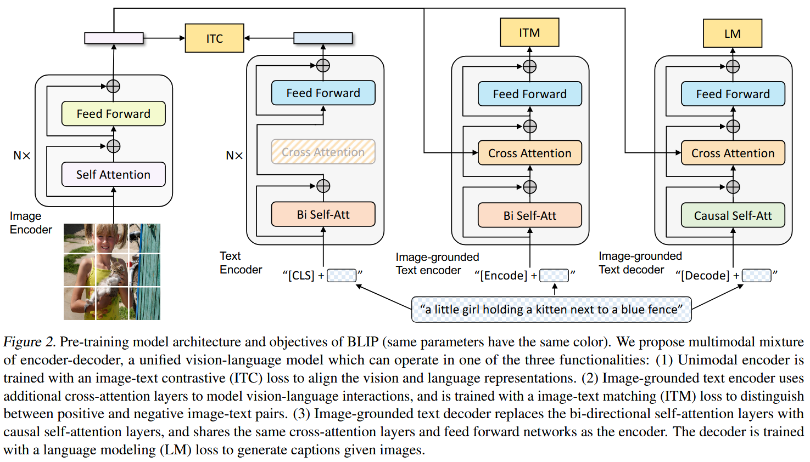
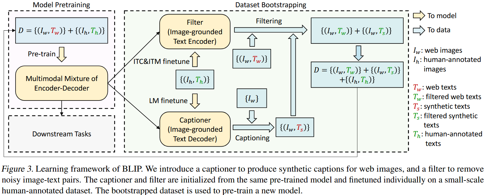

论文笔记 - BLIP Bootstrapping Language-Image Pre-training for Unified Vision-Language Understanding and Generation
1. Information
Title: BLIP: Bootstrapping Language-Image
Pre-training for Unified Vision-Language Understanding and
Generation
Link: BLIP
Paper
Source: International Conference on Machine Learning
(ICML)
Date: 2022.01.28
2. Summary
BLIP 提出了一种统一的视觉-语言预训练框架，解决了现有方法的两大局限性：
- 模型局限性：现有模型要么仅擅长理解任务（如检索），要么仅擅长生成任务（如图像描述），而 BLIP 通过多模态混合编码器-解码器（MED）实现了多任务统一建模。
- 数据局限性：传统方法依赖具有噪声网络数据，BLIP 提出Captioning and Filtering（CapFilt）方法，通过生成合成标题并过滤噪声数据，显著提升了数据质量。 实验表明，BLIP 在图像-文本检索（+2.7% Recall@1）、图像描述生成（+2.8% CIDEr）和视觉问答（+1.6% VQA 分数）等任务中达到 SOTA，并在零样本视频-语言任务中展现了强泛化能力。
3. Background
近年来，VLP 取得了显著进展，但现有方法存在两个主要局限性：
- 模型层面: 仅使用编码器（如 CLIP, ALBEF）无法直接适应文本生成任务，而编码-解码模型（如 SimVLM）在图像-文本检索任务中表现不佳。
- 数据层面: 现有方法主要依赖 Web 爬取的图像-文本对数据，但噪声较大，影响模型性能。
BLIP 通过 MED 和 CapFilt 解决了上述问题，提升了 VLP 的适应性和数据利用效率。
4. Research Objective
- 设计一个灵活的视觉-语言模型，支持理解任务（如检索）和生成任务（如图像描述）。
- 通过数据增强方法（CapFilt）提升噪声数据的利用率。
- 在多种下游任务中实现性能突破，并验证零样本迁移能力。
5. Method
5.1 多模态编码-解码混合模型（MED）
BLIP 采用了一种新的 MED 结构，使模型能够同时用于理解（检索、匹配）和生成（描述、回答）任务。MED 具有三种模式：
- 单模态编码器 (Unimodal Encoder): 独立对图像和文本进行编码，并使用 图像-文本对比损失 (Image-Text Contrastive Loss, ITC) 进行优化。
- 图像引导文本编码器 (Image-grounded Text Encoder): 通过 图像-文本匹配损失 (Image-Text Matching Loss, ITM)，学习细粒度的视觉-语言表示。
- 图像引导文本解码器 (Image-grounded Text Decoder): 使用 语言建模损失 (Language Modeling Loss, LM)，生成图像描述或回答问题。

(1) 图像-文本对比损失（ITC）
目标是最大化匹配的图像-文本对 \((I, T)\) 之间的相似度，同时最小化不匹配对 \((I, T')\) 的相似度。 \[ L_{I T C}=-\log \frac{\exp \left(\operatorname{sim}\left(E_I(I), E_T(T)\right) / \tau\right)}{\sum_{T^{\prime} \in \mathcal{B}} \exp \left(\operatorname{sim}\left(E_I(I), E_T\left(T^{\prime}\right)\right) / \tau\right)} \] 其中：
- \(E_I(I)\) 和 \(E_T(T)\) 分别是图像编码器和文本编码器的输出。
- \(\text{sim}(\cdot, \cdot)\) 表示相似度计算（通常为余弦相似度）。
- \(\tau\) 是温度参数。
- \(\mathcal{B}\) 是训练 batch。
(2) 图像-文本匹配损失（ITM）
目标是预测给定图像-文本对是否匹配，采用二元交叉熵损失： \[ L_{I T M}=-y \log p-(1-y) \log (1-p) \] 其中 \(y \in {0,1}\)，\(p\) 是 ITM 头部输出的匹配概率。
(3) 语言建模损失（LM）
用于文本生成任务，采用自回归损失： \[ L_{L M}=-\sum_{t=1}^N \log P\left(w_t \mid w_{<t}, I\right) \] 其中：
- \(w_t\) 是时间步 \(t\) 处的单词。
- \(P(w_t | w_{<t}, I)\) 是解码器生成的概率。
5.2 数据增强：Captioning and Filtering（CapFilt）

- CapFilt（Captioning and Filtering）的流程可以概括为以下步骤：
- 初始化模型：
基于预训练的多模态混合编码器-解码器（MED），分别微调两个模块：
- Captioner（生成器）：使用 MED 的解码器部分，在高质量数据集（如 COCO）上微调，使其能够根据输入图像生成文本描述。
- Filter（过滤器）：使用 MED 的编码器部分，在同一高质量数据集上微调，使其能判断图像-文本对是否匹配（例如，通过图像-文本匹配损失 ITM）。
- 生成合成标题： 对网络爬取的图像（\(I_w\)），使用 Captioner 生成合成标题（\(T_s\)）。生成时采用核采样（nucleus sampling）（而非确定性方法如束搜索），以增加标题的多样性。例如，对一张海滩图片，Captioner 可能生成“阳光下的沙滩与椰树”或“海边度假的宁静场景”等多样化描述。
- 过滤噪声数据： 将原始网络文本（\(T_w\)）和合成文本（\(T_s\)）输入 Filter，判断它们与对应图像的匹配程度。Filter 会为每对图像-文本计算匹配概率，若概率低于阈值（或通过二分类），则判定为噪声并剔除。例如，原始网络文本“我的周末旅行”可能因与图像内容无关而被过滤，而合成文本“蓝天下的沙滩与遮阳伞”则被保留。
- 构建增强数据集： 将过滤后的高质量文本（包括保留的原始文本 \(T_w^{\prime}\) 和合成文本 \(T_s^{\prime}\)）与人工标注数据（如 COCO 的\(T_h\)）合并，形成最终训练集。例如，原始 14M 噪声数据经过 CapFilt 处理后，可能保留 10M 高质量数据，并与 COCO 的 50 万标注数据结合，用于训练更鲁棒的模型。
- 重新预训练模型： 使用增强后的数据集对MED模型进行预训练，联合优化对比学习（ITC）、匹配（ITM）和生成（LM）目标。
- 初始化模型：
基于预训练的多模态混合编码器-解码器（MED），分别微调两个模块：
6. Evaluation
- 图像-文本检索：BLIP 在COCO 数据集上达到了 80.6% 的文本检索召回率 @1（TR@1）和 63.1% 的图像检索召回率 @1（IR@1），在 Flickr30K 数据集上达到了 96.0% 的 TR@1 和 85.0% 的 IR@1，均优于现有方法。
- 图像字幕生成：在 COCO 数据集上，BLIP 的CIDEr 分数达到了 129.7，SPICE 分数达到了 14.4；在NoCaps 数据集上，CIDEr 分数达到了 105.1，SPICE 分数达到了 14.4，显著优于其他方法。
- 视觉问答（VQA）：BLIP 在 VQA2.0 数据集上达到了 78.24% 的准确率，优于 ALBEF 等方法。
- 零样本视频语言任务：在 MSRVTT 数据集上，BLIP 在零样本文本到视频检索任务中达到了 43.3% 的召回率@1，显著优于其他方法。
7. Conclusion
BLIP 通过提出新的模型架构和数据引导方法，在多种视觉-语言任务上取得了显著的性能提升，并展现了强大的泛化能力。该研究证明了通过优化数据质量和模型架构来提升视觉-语言预训练模型性能的有效性。